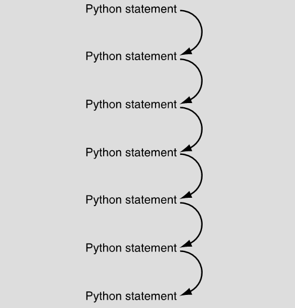
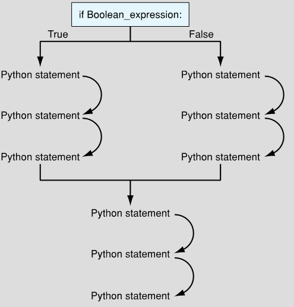

Python formatting conventions
“If you come to a fork in the
— Yogi Berra

Sequential flow

Non-sequential flow
if condition:
# suite
else:
# suite
if condition:
# suite
elif:
# suite
else:
# suite
count = 10
while count >= 0:
print(f"{count:>2}...")
count -= 1
print()
print(" Blast off!!! 🚀")
Three Parts of a while loop
count = 10
while count >= 0:
print(f"{count:}...")
count -= 1
Initialization
Control
Modification
Initialization: Outside of the loop and before the loop is entered,
the loop-control variable needs to be initialized. What value to initialize the
variable requires some consideration. The initial value should (typically) allow the
loop to begin (run through the first iteration). This variable's value will control
when the loop ends so it is initialized with the condition statement in mind.Control: The condition statement of the while loop needs to be
written, and the Boolean expression is typically written in terms of the loop-control
variable. The initial value and this condition are related and should be considered
together.Modification: Third, somewhere in the while loop suite, the loop-
control variable is modified so that eventually the Boolean expression of the while
becomes False so that the loop ends. This often means that the loop-control variable
will have a different value in the suite during each iteration of the loop It is the
changing of value that allows the n programmer to control when the loop will end.
Not a classic for, for...in
meta_vars = ["spam", "ham", "eggs"]
for var in meta_vars:
print(var.capitalize())
for count in range(10, -1, -1):
print(f"{count:>2}...")
print()
print(" Blast off!!! 🚀")
while vs for
while is for when you don't know now many iterations to make
for is for when you know exactly how many iterations you will make or for
walking over an iterable
A Note on Naming
Really don't like the way the book tags vars with type. Type hints FTW!
What Does It Mean to be Equal?
== vs is
Another Word on Assignments
spam, ham = 37, 42Multiple assignment
spam, ham = ham, spamSwapping values
What is the RHS evaluating to?
Minimal Universal Computing
What is the minimal set of instructions we need to compute anything that can be computed?
LOAD ALoad contents at address A in RAM into accumulator
STORE Astore accumulator contents into address A in RAM
CLRclear accumulator
INCincrement accumulator
BRZ Xbranch to address A in RAM if accumulator is zero
All possible computer programs can be written using these five
instructions.
Model of a Turning Machine, photo by Rocky Acosta - Own work, CC BY 3.0,
https://commons.wikimedia.org/w/index.php?curid=24369879
A photo of Alan Turing, by possibly Arthur Reginald Chaffin (1893-1954) -
http://www.turingarchive.org/viewer/?id=521&title=4, Public
Domain, https://commons.wikimedia.org/w/index.php?curid=22828488